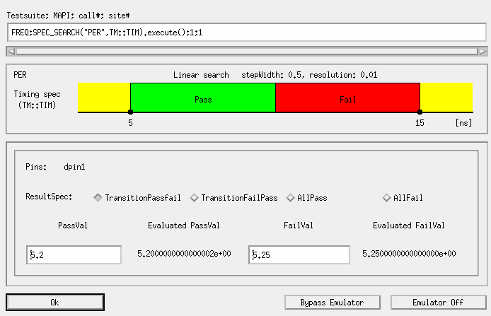

SpecSearch type
The Hardware Response Emulator SpecSearch Dialog window opens
when the execute() member function of the SPEC_SEARCH API is
executed offline using the emulator in "Store" mode. In this dialog, you can newly create or
update the Hardware Response File for the test by entering user-programmed data that is retrieved
by the following APIs:
SPEC_SEARCH(Name, type).getResultSpec();SPEC_SEARCH(Name, type).getPassVal();SPEC_SEARCH(Name, type).getFailVal();SEARCH_FUNC_TASK.execute();

In this dialog, the settings of the SPEC_SEARCH API are displayed using
strings and a graph; the contents of the graph change depending on the settings of this dialog.
To specify user-provided data in this dialog:
- From the ResultSpec options, choose the desired transition state that
is retrieved with the
getResultSpecmember function. The chosen state is passed as a parameter togetResultSpec. The graph in this dialog changes depending on the chosen option. - If you retrieve the transition values of the spec search test, set the transition value in
the following fields:
- Passval
This field specifies a value that is retrieved with the
getPassValuemember function. - FailVal
This field specifies a value that is retrieved with the
getFailValuemember function.
- Passval
- Click OK to save the specified data in the hardware response file in the hardware response directory.
Testsuite; MAPI; call#; site# |
This filed displays the test suite name and test method API that takes the hardware response data specified in this dialog. The expression in this field is similar to the one in ARRAY_X type. |
ResultSpec |
This filed specifies the result status that is retrieved by the getResultSpec() member function. |
PassVal FailVal |
The PassVal field specifies the transition value
of the spec search test that is retrieved by the You can enter desired DOUBLE values in these fields even if they are outside the range between the start and stop values of the spec search test. If you want to enter "INF" for the transition state, "AllPass" or "AllFail", use the copy/paste function by right-clicking. |
OK |
Same as the ARRAY_X type. |
Bypass Emulator |
|
Cancel Emulator |
Functional changes
- Introduced before SmarTest 6.3.2